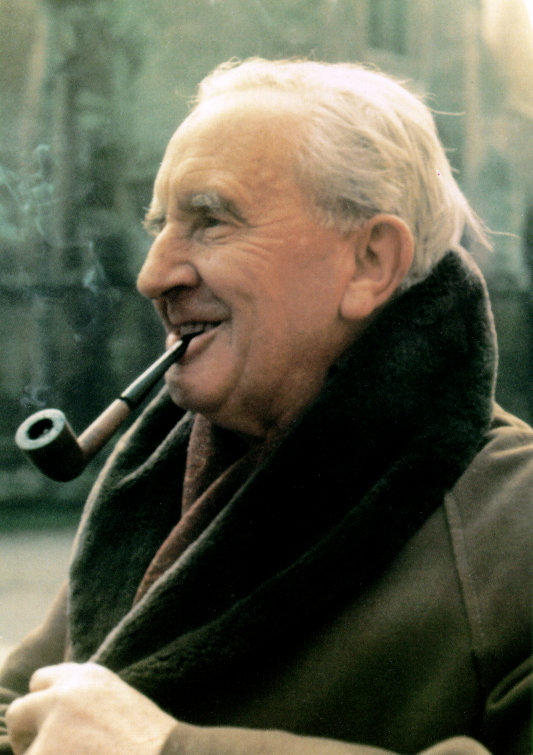

J. R. R. Tolkien (ejtsd: tolkín), CBE, teljes nevén John Ronald Reuel Tolkien (Bloemfontein, Oranje Szabadállam, 1892. január 3. – Bournemouth, Anglia, 1973. szeptember 2.) angol író, költő, filológus, nyelvész, egyetemi professzor, festő. Az Oxfordi Egyetemen az angolszász nyelvek professzora 1925-től 1945-ig, majd az angol nyelv és irodalom professzora 1945-től 1959-ig. Habár tudományos munkássága rendkívül jelentős, neve a nagyközönség körében mégis sokkal inkább írói és költői tevékenysége miatt ismert: az egyetemes irodalomtörténet legolvasottabb, legelismertebb és legnagyobb hatású alakjai közé tartozik.
Munkássága
Legismertebb műve a Gyűrűk Ura, valamint az ezt megelőző A hobbit (Szobotka Tibor eredeti fordításában A babó). Középfölde eredetével és történelmével foglalkozó könyve, a Szilmarilok mára szintén széles körben ismert. Ez utóbbi mű több tucat másik, Középfölde-témájú kötetéhez hasonlóan halála után jelent meg. E művek helyszínét, Középföldét az úgynevezett Arda- vagy tolkieni mitológiában helyezte el, melyet az angolszász népek eredetmitológiájaként képzelt el, ezért a klasszikus értelemben véve nem fantasy. E világot óriási történelmi, irodalmi és filozófiai műveltségének és rendkívül termékeny fantáziájának segítségével keltette életre és alkotta meg a legapróbb részletekig. Mitológiájának középpontja lényegében a Középföldeként megjelenített Európa őstörténete, így érdeklődése homlokterében mindig az európai történelem és kultúra állt, ugyanakkor műveiben a világtörténelem és különösen a keleti kultúrák sokrétű ismeretéről is tanúbizonyságot tesz. E művek folyamatos és időtálló népszerűsége alapozta meg hírnevét a modern fantasy atyjaként. Ő fektette le azokat az alapokat, amelyekre e műfaj a mai napig épül.
Nyelvek
Tolkien mindvégig lelkes nyelvtudós maradt: a nyelvtudomány iránti érdeklődése hatására tizenöt mesterséges nyelvet alkotott (közülük a leghíresebbek és legkidolgozottabbak A Gyűrűk Ura két tünde nyelve, a quenya és a sindarin.) Középfölde teljes kialakulását és történetét később ezekhez a nyelvekhez alkotta meg háttérként. A Gyűrűk Ura című művében több függelék is foglalkozik elképzelt világa nyelveinek leírásaival.
Tolkien tucatnyi európai nyelvet beszélt folyékonyan, az óangol és kelta mellett franciául, spanyolul és germán nyelveken is. Személyes leveleiben megjegyezte, hogy a finn nyelvet különösen szép hangzásúnak tartja és a Kalevala nagy hatással volt rá, mely bevallottan megjelenik A szilmarilok (lásd Túrin Turambar) illetve A Gyűrűk Ura című művében is.
Műveinek népszerűsége hatással volt a fantasy-irodalom nyelvhasználatára.